器材库 > APS及其以下画幅可换镜头数码相机 > EOS M2
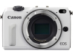
规格总览
产品类型
APS画幅可换镜头数码相机
发布日期
2013-12-03
厂家推荐价格
64,800.00 （日元）
影像规格
影像传感器
CMOS
影像传感器尺寸
22.3x14.9mm
有效像素
1800万
影像处理器
DIGIC 5
最大解像度
5184×3456
静态图像尺寸
L：5184×3456、M：3456×2304、S1：2592×1728、S2：1920×1280、S3：720×480
静态图像格式
JPEG, RAW, RAW+JPEG
画幅比
3:2, 4:3, 16:9, 1:1
短片尺寸
1920x1080（全高清）：30p/25p/24p；1280x720（高清）：60p/50p；640x480（标清）
短片格式
MOV, MPEG4-AVC/H.264
短片音效
线性PCM
除尘系统
超声波除尘系统
镜头和对焦
镜头卡口
Canon EF-M
对焦系统类型
混合自动对焦（相位侦测/对比度检测自动对焦）
对焦点
31点（最多）
对焦模式
面部+追踪、自由移动多点、自由移动1点、手动
自动对焦点选择
自动, 手动
手动对焦
支持
曝光控制
测光模式
中央重点测光, 多分区评价测光, 点测光
测光范围
1EV~20EV
曝光模式
Auto, P（程序自动曝光）, A（光圈优先自动曝光）, S（快门速度优先自动曝光）, M（手动测光曝光）
快门类型
电子控制焦平面快门
快门速度
1/4000至30秒、B门（总快门速度范围。可用范围随拍摄模式各异）\闪光同步速度为1/200秒
曝光补偿
±3EV以1/3或1/2EV级调整
自动包围曝光
在±2级间以1/3或1/2级为单位调节
ISO感光度
100, 200, 400, 800, 1600, 3200, 6400, 自动, 可扩展至12800, 可扩展至25600
白平衡
日光, 闪光灯, 阴天, 阴影, 自动, 钨丝灯, 预设白平衡, 荧光灯（日光白色）
自拍
10秒, 2秒
连拍
单拍AF/MF时：最高约4.6张/秒;JPEG大/优：约13 （约17）张;RAW：约5 （约5）张;RAW+JPEG大/优：约3 （约3）张
闪光灯
内置闪光灯
无
闪光模式
E-TTL II
闪光补偿
±2EV以1/3或1/2EV级调整
外接闪光灯
EX系列闪光灯
PC端子
无
取景器/显示屏
LCD类型
TFT LCD
LCD尺寸
3.0英寸
LCD像素
104万
LCD特性
触摸屏
亮度调节级数
7
Live View
有
文件输入/输出
存储卡
SD/SDHC, SDXC
视频/音频接口
HDMI Mini 输出
电源
电池
LP-E12
续航能力
23℃时约230张、0℃时约200张
机身规格
材质
身使用铝合金等材料，内部构造加入了镁合金
颜色
银色, 黑色, 白色
尺寸
104.9 × 65.2 × 31.6mm
重量
238g
其它
配件端口
遥控线, GPS装置, 热靴, 快门线, 脚架螺丝孔
工作温度
0 ℃ ～ 40℃
工作湿度
不高于85%
附件
卡口适配器 EF-EOS M、闪光灯 SPEEDLITE 600EX-RT、色彩滤镜架SCH-E1、色彩滤镜SCF-E1、闪光灯 SPEEDLITE 90EX、附件支架 AB-E1、闪光灯信号发射器 ST-E3-RT
冰尘2015-09-06 12:154.5 分
操作性 4.50功能性 4.50美观性 5.00趣味性 4.50耐用性 4.00性价比 5.00解像力 4.50色彩还原 4.00
UVfilter2014-11-10 19:164.19 分
操作性 4.00功能性 4.00美观性 4.00趣味性 4.50耐用性 4.00性价比 4.00解像力 4.50色彩还原 4.50
我是阿弯2014-09-21 21:004.5 分
操作性 4.50功能性 4.50美观性 4.50趣味性 4.50耐用性 4.50性价比 4.50解像力 4.50色彩还原 4.50
hdxry2014-06-02 14:274.38 分
操作性 5.00功能性 5.00美观性 4.00趣味性 4.00耐用性 4.00性价比 5.00解像力 4.00色彩还原 4.00
lidannb2014-01-21 18:432.56 分
操作性 3.50功能性 0.50美观性 3.00趣味性 3.50耐用性 4.00性价比 2.00解像力 1.50色彩还原 2.50
crazydy2014-01-17 14:154.56 分
操作性 4.00功能性 4.50美观性 4.50趣味性 5.00耐用性 4.50性价比 5.00解像力 4.50色彩还原 4.50
产品图 / 样片
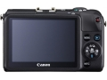
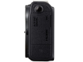
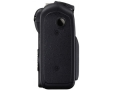
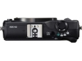
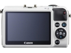
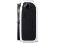
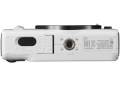
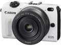
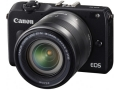
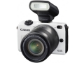
评测 / 相关文章
- 详细内容 （存档）
- 小幅升级 佳能EOS M2评测 （存档）
- ［试用］EOS M2时尚街区扫拍 （存档）
- ［资讯］支持新机 佳能香港发布DPP软件更新调整 （存档）
- ［资讯］佳能EOS M2全新色彩再登场 （存档）
- ［试用］某2（M2）生活 （存档）
- ［资讯］佳能EOS M2定于12月20日上市 （存档）
相关文章
- ［试用］EOS M2时尚街区扫拍 （存档）
- ［资讯］支持新机 佳能香港发布DPP软件更新调整 （存档）
- ［资讯］佳能EOS M2全新色彩再登场 （存档）
- ［试用］某2（M2）生活 （存档）
- ［试用］小幅升级 佳能EOS M2评测 （存档）
- ［资讯］佳能EOS M2定于12月20日上市 （存档）
- ［资讯］佳能EOS M2 （存档）
- ［试用］缅甸的碎影 EOS M2一机一头行走记录 （原站已下线）